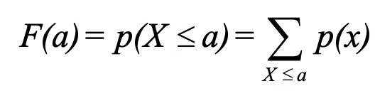
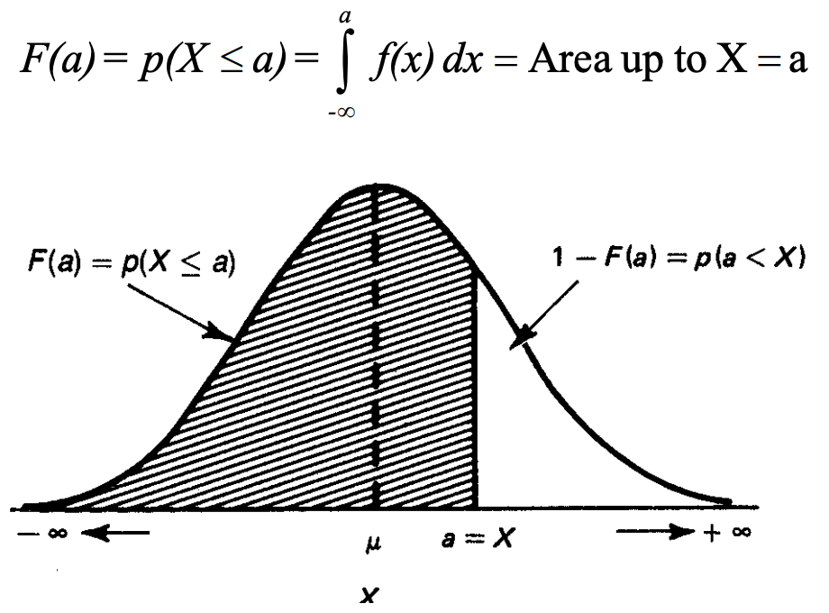
Permutation is an arrangement of objects in order.
Total number of permutations of N objects = N! (N factorial)
Where
N! = 1 * 2 * 3 *...* (N-1) * N
0! = 1
If some of the N objects are similar, such as N₁ objects are alike, N₂ objects are alike … Nₖ objects are alike, and ΣNᵢ = N.
The total number of permutations of these N objects = N! / (N₁!N₂!...Nₖ!)
If only r objects can be taken in each permutation.
The total number of permutations of r objects of N objects = N! / (N - r)!
Its notion is ɴPᵣ, where ɴPɴ is full permutation, i.e. N!
Combination represents number of ways of selecting r objects from N objects, irrespective of order. In contrast, ɴPᵣ selects r objects from N objects and the order matters.
The total number of combinations of r distinct of N objects = ɴPᵣ / ᵣPᵣ
= N! / (r!(N-r)!)
Its notion is ɴCᵣ reads as N choose r.
Sometimes the number of combinations is known as a binomial coefficient, and sometimes the notation ɴCᵣ is used.
Combination is also often represented using following notion:
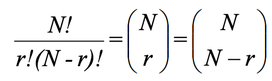
Many experiments share the common element that their outcomes can be classified into one of two events, one can be labeled as “success” and the other as failure. A Bernoulli trial is each repetition of an experiment involving only 2 outcomes:
We are often interested in the result of independent, repeated Bernoulli trials, i.e. the number of successes in repeated trials.
A binomial distribution gives us the probabilities associated with independent, repeated Bernoulli trials.
A binomial distribution describes the probabilities of those of
The probability of getting r successes in N independent trials with each having p success probability:
p(X = r; N, p) = number of ways event can occur * p(one occurrence)
= ɴCᵣ * pʳ * (1 - p)⁽ᴺ⁻ʳ⁾
More formally, in sampling a stationary Bernoulli process, with the probability of success equal to p, the probability of observing exactly r successes in N independent trials is:
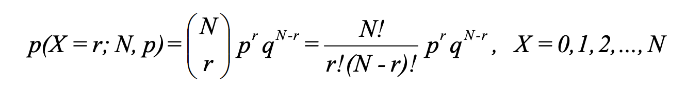
Another way of defining binomial distribution:
Mean:
E(Xᵢ) = Σxᵢp(xᵢ)
= 0 * (1 - p) + 1 * p
= p
E(X) = E(X₁ + X₂ ... + Xɴ)
= E(X₁) + E(X₂) + ...+ E(Xɴ)
= Np
Variance:
xᵢ = xᵢ²
V(xᵢ) = E(xᵢ²) - E(xᵢ)²
= p - p²
= p(1 - p)
= pq
V(X) = V(X₁) + V(X₂) ... + V(Xɴ)
= Npq
For small p and small N, the binomial distribution is what we call skewed right. That is, the bulk of the probability falls in the smaller numbers, and the distribution tails off to the right.
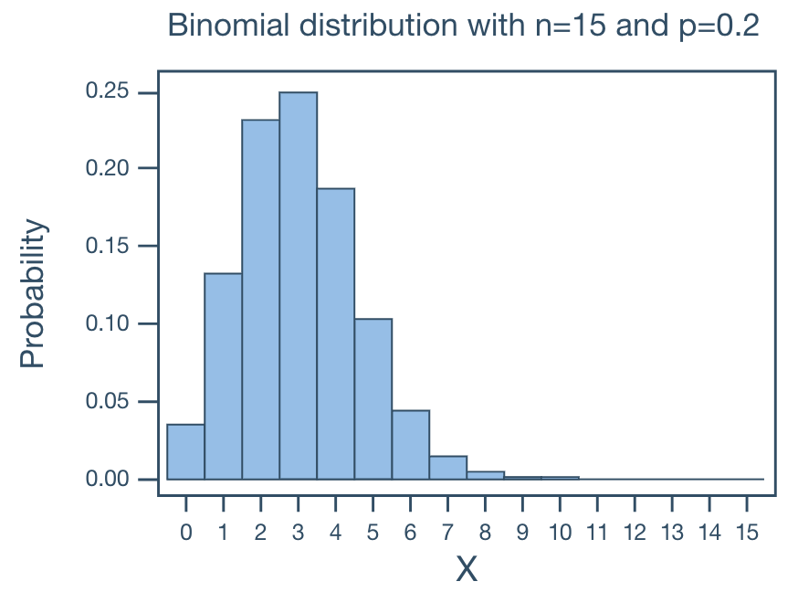
For large p and small N, the binomial distribution is what we call skewed left. That is, the bulk of the probability falls in the larger numbers and the distribution tails off to the left.
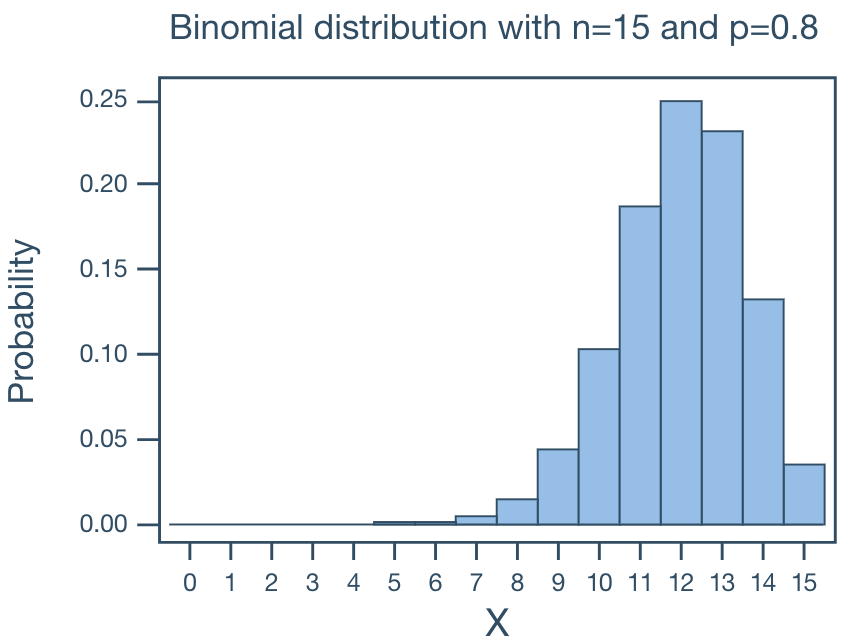
For p = 0.5 and large and small N, the binomial distribution is what we call symmetric. That is, the distribution is without skewness.
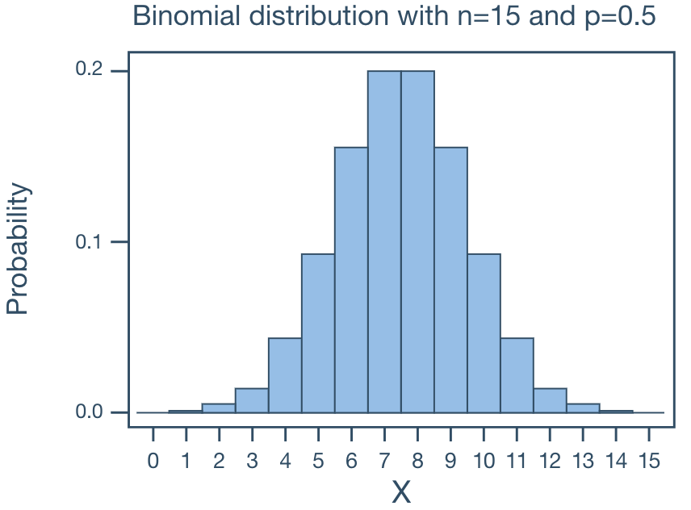
When p ≠ 0.5, when N becomes large, the binomial distribution approaches symmetry.
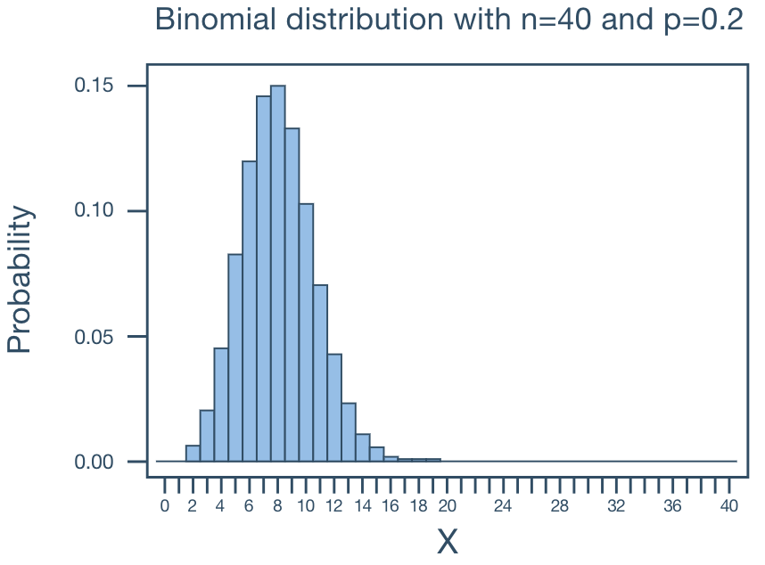
In a family of 11 children, what is the probability that there will be more boys than girls?
Solve this problem WITHOUT using the complements rule.
Solution:
p(boy) = 0.5
N = 11
p(more boys than girls) = p(6, N, p(boy)) + p(7, N, p(boy)) ... + p(11, N, p(boy))
= 0.2256 + 0.1611 + 0.0806 + 0.0269 + 0.0054 + 0.0005
= 0.5
The Poisson distribution models the number of times an event happens in a fixed interval of time or space when events occur independently at a constant average rate. Examples of Poisson random variable:
If X is a Poisson random variable, then the probability mass function (PMF) is:
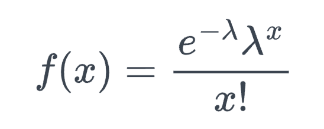
Verify ∑𝑓(x) = 1
Taylor series for eˣ = ∑xᵏ/k! for k = 0, 1, 2, … Now ∑𝑓(x) = ∑(e^-λ * λᵏ / k!)
= e^-λ * ∑(λᵏ / k!)
= e^-λ * e^λ
= 1
Mean and variance of a Poisson random variable are both λ.
There are theoretically an infinite number of possible Poisson distributions. Any specific Poisson distribution depends on the parameter λ.
Let X denote the number of events in a given continuous interval. It follows an approximate Poisson process with parameter λ > 0 if:
Let X equal the number of typos on a printed page with a mean of 3 typos per page.
What is the probability that a randomly selected page has at least 1 typo on it?
Solution:
p(X ≥ 1) = 1 - p(X = 0)
= 1 - e⁻³3⁰ / 0!
= 1 - e⁻³
= 0.9502
What is the probability that a randomly selected page has at most 1 typo on it?
Solution:
p(X ≤ 1) = p(X = 0) + p(X = 1)
= e⁻³3⁰ / 0! + e⁻³3¹ / 1!
= e⁻³ + 3e⁻³
= 0.1992
The Poisson distribution can be viewed as the limit of binomial distribution. Suppose X ~ Binomial(N, λ/N) where N is very large and λ/N is very small. We show that the PMF of X can be approximated by the PMF of a Poisson(λ).
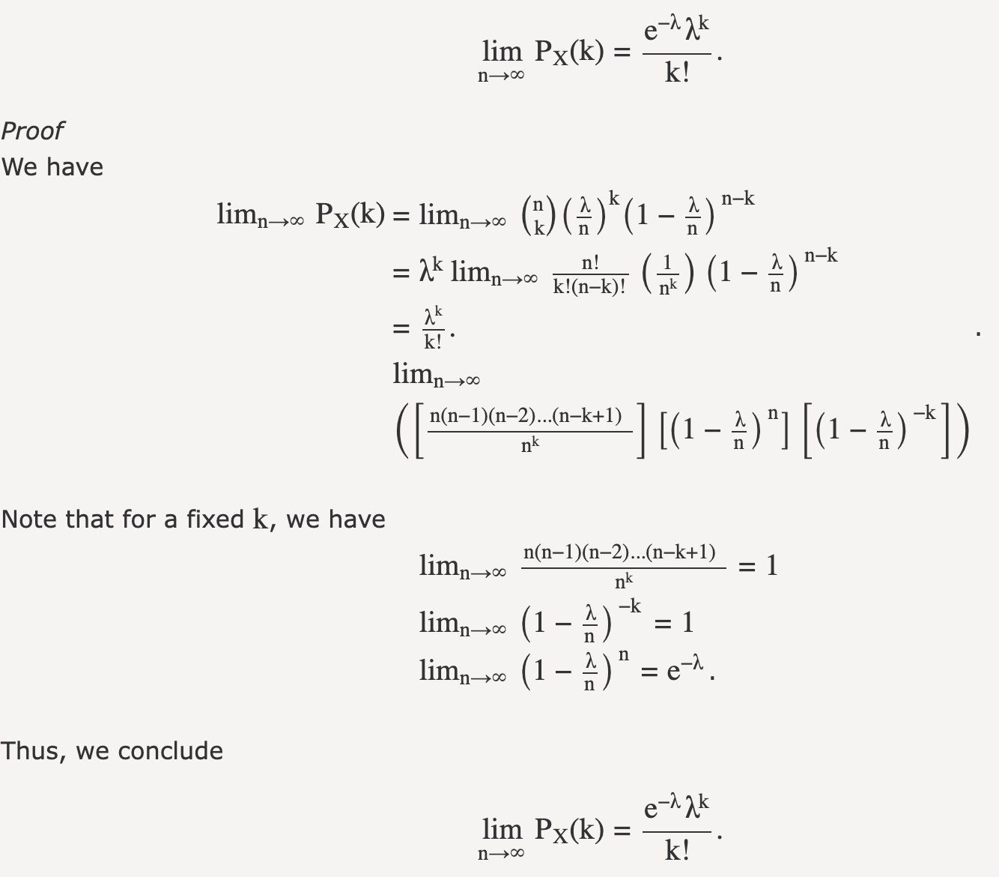
In the screenshot, n is the Binomial distribution parameter N. λ is the Poisson distribution parameter. λ/N is the Binomial distribution parameter p. The k is the fixed value for Poisson random variable.
An intuitive understanding is that when N becomes larger, the Poisson interval is divided into N smaller sub-intervals (λ/N). The the sub-interval becomes sufficiently small, it can guarantee only one event happens in each sub-interval. If we regard an event occurrence in a sub-interval as a “success” in binomial distribution, then the following 2 probabilities are equivalent:
This is useful because Poisson PMF is much easier to compute than the binomial.
Symmetric, bell shaped. It describes data that clusters around a mean with symmetric spread.
Continuous for all values of X between -∞ and ∞ so that each conceivable interval of real numbers has a probability greater than 0.
-∞ ≤ X ≤ ∞
Two parameters, µ and σ. Note that the normal distribution is actually a family of distributions, since µ and σ determine the shape of the distribution.
Probability density function (PDF):
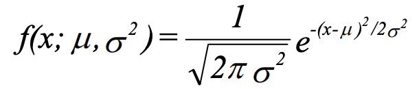
The notation N(µ, σ²) means normally distributed with mean µ and variance σ². If we say X ~ N(µ, σ²), we mean that X is distributed N(µ, σ²).
About 2⁄3 of cases fall within 1 standard deviation of the mean, that is:
p(µ - σ ≤ X ≤ µ + σ) = 0.6826
About 95% of cases fall within 2 standard deviations of the mean, that is
p(µ - 2σ ≤ X ≤ µ + 2σ) = 0.9544
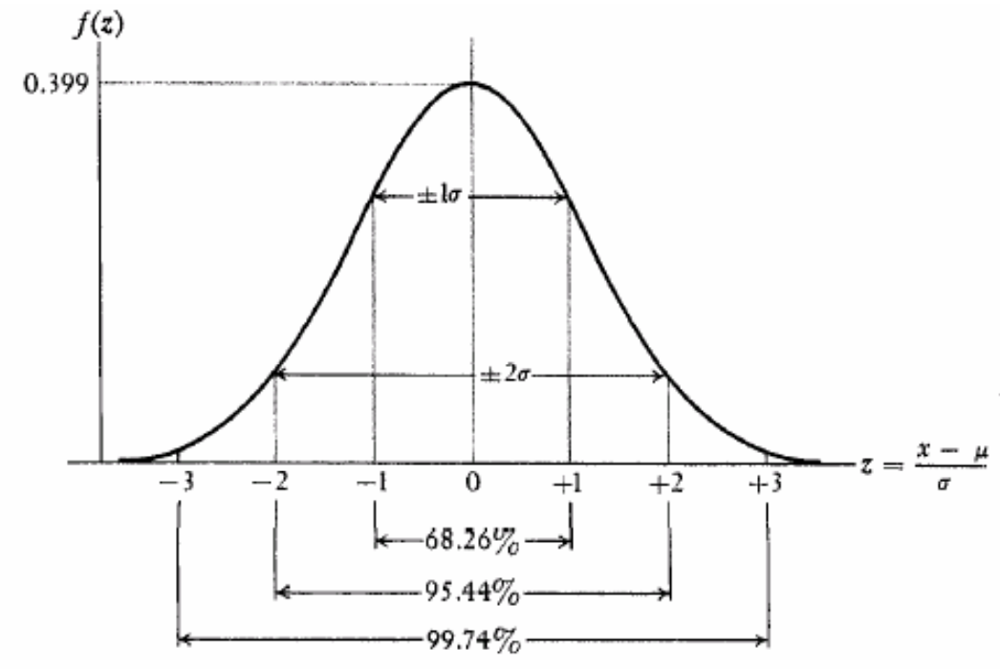
Usage in time series:
Working with PDF is tedious. The trick is to convert arbitrary normal distribution with µ and σ into a standardized normal distribution N(0, 1), i.e. µ = 0 and σ = 1.
N(0, 1) Lookup table and how it works can be found here
Define CDF as 𝐹(x) = p(X ≤ x):
Rule #1
p(Z ≤ a) = 𝐹(a) when a is positive
= 1 - 𝐹(-a) when a is negative
Due to the symmetry of the curve, when 𝐹(a) > 0.5, a > 0, and
when 𝐹(a) < 0.5, a < 0.
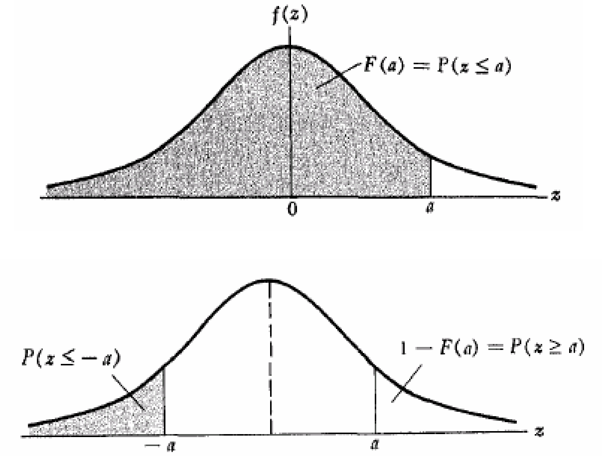
Rule #2
p(Z ≥ a) = 1 - 𝐹(a) when a is positive
= 𝐹(-a) when a is negative
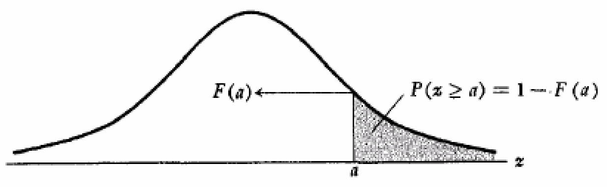
Rule #3
p(a ≤ Z ≤ b) = 𝐹(b) - 𝐹(a)
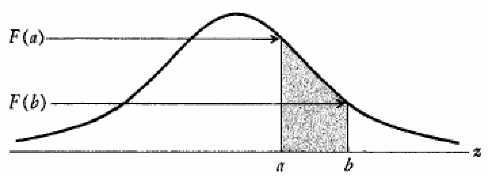
Rule #4
Assume a positive a:
p(-a ≤ Z ≤ a) = 𝐹(a) - 𝐹(-a)
= 𝐹(a) - (1 - 𝐹(a))
= 2𝐹(a) - 1
Below are some examples of how to use standardized scores to address various questions.
The top 5% of applicants (as measured by GRE scores) will receive scholarships.
If GRE ~ N(500, 100²), what is the GRE score to qualify for a scholarship?
Solution:
Let X = GRE, want to find x such that p(X ≥ x) = 0.05
Let Z = (X - 500) / 100 ~ N(0, 1)
For p(Z ≥ z) = 0.05, z ≈ 1.65
x = (z * 100) + 500 = 665
Family income ~ N(25000, 10000²).
If the poverty level is $10,000, what percentage of the population lives in poverty?
Solution:
Let X = family income, want to find p(X ≤ 10000).
Let Z = (X - 25000) / 10000 ~ N(0, 1)
z = (10000 - 25000) / 10000 = -1.5
p(Z ≤ -1.5) = 1 - p(Z ≤ 1.5)
= 1 - 0.9332
= 0.0668
A new tax law is expected to benefit “middle income” families, those with incomes between
$20,000 and $30,000. If Family income ~ N(25000, 10000²), what percentage of the population
will benefit from the law?
Solution:
Let X = family income, want to find p(20000 ≤ X ≤ 30000)
Let Z = (X - 25000) / 10000 ~ N(0, 1)
z₀ = (20000 - 25000) / 10000 = -0.5
z₁ = (30000 - 25000) / 10000 = 0.5
p(20000 ≤ X ≤ 30000) = p(-0.5 ≤ Z ≤ 0.5)
= 2𝐹(0.5) - 1
= 1.383 - 1
= 0.383
For a large enough N, a binomial variable X is approximately ~N(Np, Npq). The normal distribution can be used to approximate the binomial distribution.
Based on Central Limit Theorem, each Bernoulli event can be seen as a random variable with p probability of success and (1 - p) probability of failure. Then their mean X̄ = (X₁ + X₂ + … + Xₙ) / n is normally distributed with E(X̄) = μ and V(X̄) = σ² / n. Note the binomial variable X is X̄*n, which is also normally distributed with E(X) = nμ = np and V(X) = σ² = npq.
Exponential distributions model the probability of the waiting time w until the first event arrives. As a comparison, the Poisson distribution models the number of times an event happens in a fixed interval of time.
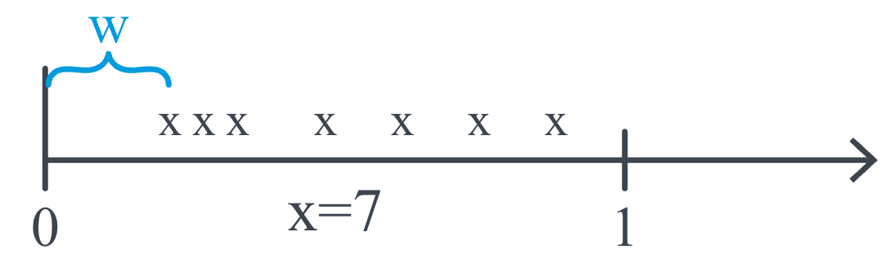
If X is an exponential random variable of the waiting time, then the probability density function (PDF) is:
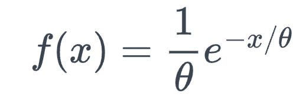
Alternatively, PDF can also be represented by Poisson parameter λ.
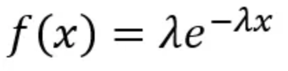
Curves with changeing λ.
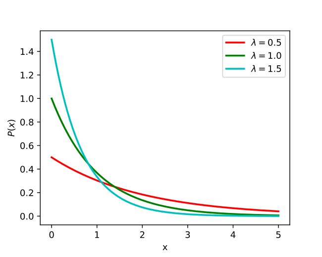
Mean and variance of an exponential random variable are θ and θ².
Exponential distribution PDF can be derived from the Poisson distribution.
𝐹(x) = p(X ≤ x)
= 1 - p(X > x)
= 1 - p(no events in [0, x] interval)
= 1 - Poisson(X = 0, λw)
= 1 - e^(-λw) * λ⁰ / 0!
= 1 - e^(-λw)
= 1 - e^(-x/θ)
𝑓(x) = 𝐹’(x) = -e^(-x/θ) * (-1/θ)
= 1/θ * e^(-x/θ)
Students arrive at a restaurant according to an approximate Poisson process at a mean rate
of 30 students per hour. What is the probability that the bouncer has to wait more than
3 minutes to card the next student?
Solution:
θ = 2 mins
𝐹(X > 3) = 1 - 𝐹(X ≤ 3)
= 1 - (1 - e^(-3/2)
≈ 0.223
The number of miles that a car can run before its battery wears out is exponentially
distributed with an average of 10,000 miles. The owner of the car needs to take a
5000-mile trip. What is the probability that he will be able to complete the trip without
having to replace the car battery?
Solution:
Let X denote the number of miles that the car can run before its battery wears out.
X is exponentially distributed with θ = 10000 miles
𝐹(X > 5000) = 1 - 𝐹(X ≤ 5000)
= 1 - (1 - e^(-5000/10000)
≈ 0.604
Gamma distributions model the probability of the waiting time w until the 𝛼ᵗʰ event arrives given mean waiting.
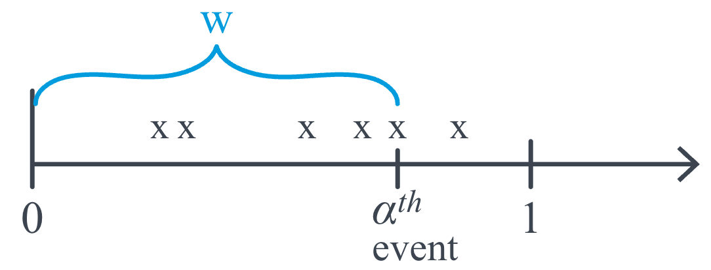
If X is a gamma random variable of the waiting time, then the probability density function (PDF) is:
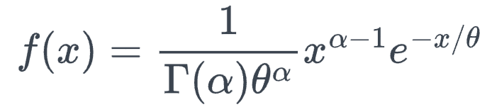
Alternatively, PDF can also be represented by Poisson parameter λ.
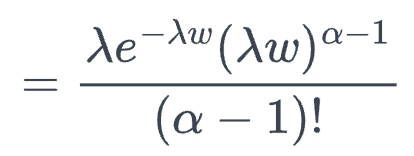
Gamma function:
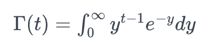
Γ(t) = (t - 1) * Γ(t-1) given t > 1.
Γ(n) = (n - 1)! if t = n, a positive integer.
Curves with changing θ and 𝛼.
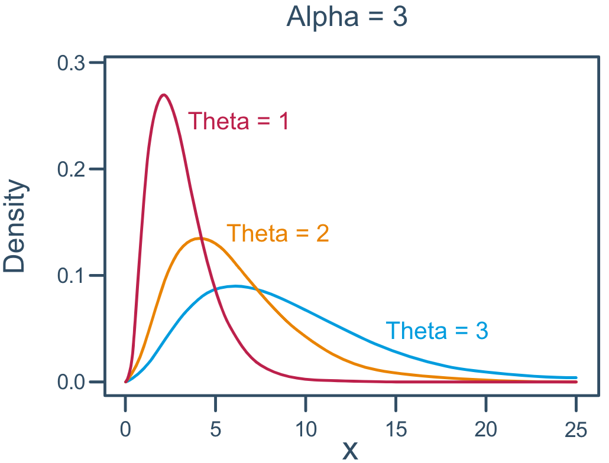
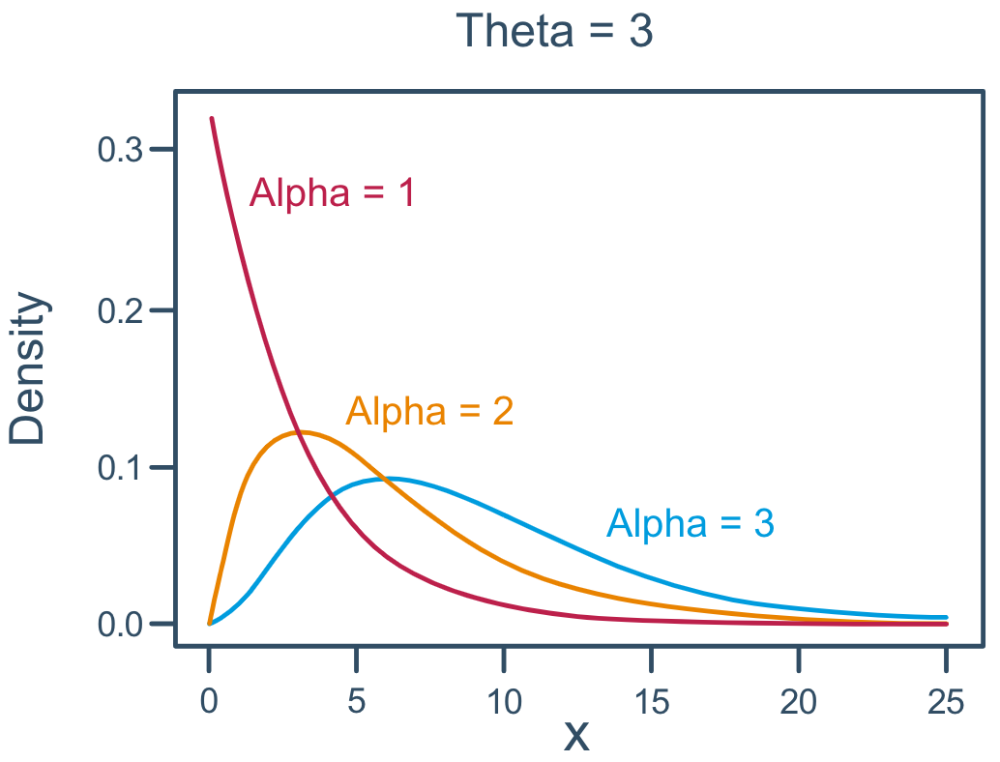
Mean and variance of a gamma random variable are 𝛼θ and 𝛼θ².
Engineers designing the next generation of space shuttles plan to include two fuel pumps
one active, the other in reserve. If the primary pump malfunctions, the second is
automatically brought on line. Suppose a typical mission is expected to require that fuel
be pumped for at most 50 hours. According to the manufacturer's specifications, pumps are
expected to fail once every 100 hours. What are the chances that such a fuel pump system
would not remain functioning for the full 50 hours?
Solution:
Let X denote the waiting time until 𝛼 = 2nd pump breaks down.
X is gamma distributed with θ = 100 hours
𝑓(x) = 1/10000 * x * e^(-x/100)
p(X < 50) = ∫𝑓(x)𝑑x for 0 < x < 50
The Chi-Square distribution is used in various statistical tests, such as the Chi-Square goodness-of-fit test, which evaluates whether an observed frequency distribution fits an expected theoretical distribution, and the Chi-Square test for independence, which checks the association between categorical variables in a contingency table.
The chi-square distribution is just a special case of the gamma distribution! Let X follow a gamma distribution with 𝛼 = r/2 and θ = 2, then its the probability density function (PDF) is:
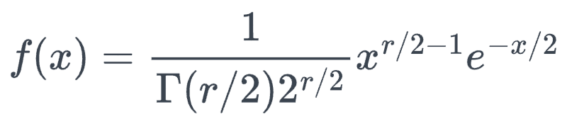
Curves with changing r (degrees of freedom).
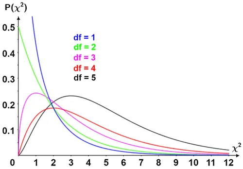
Mean and variance of a chi-square random variable with r degrees of freedom are r and 2r.
Relationship with standard normal distribution:
Suppose the X₁, X₂, ... Xₙ random variables of standard normal distribution, then:
X₁² + X₂² + ... + Xₙ² ~ 𝒳²(n)
That is: sum of the squares of n independent standard normal random variables follows
the Chi-Square distribution with n degrees of freedom.